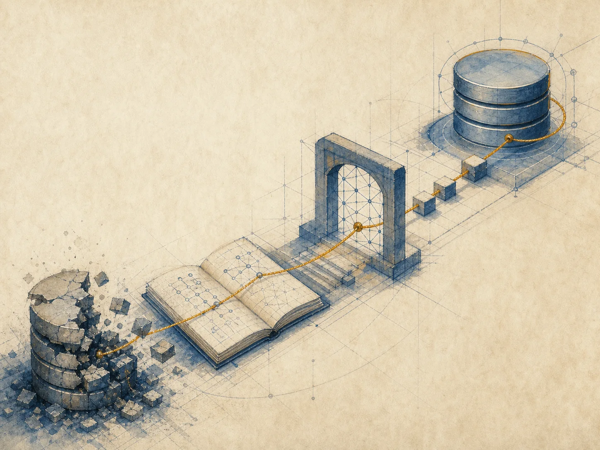
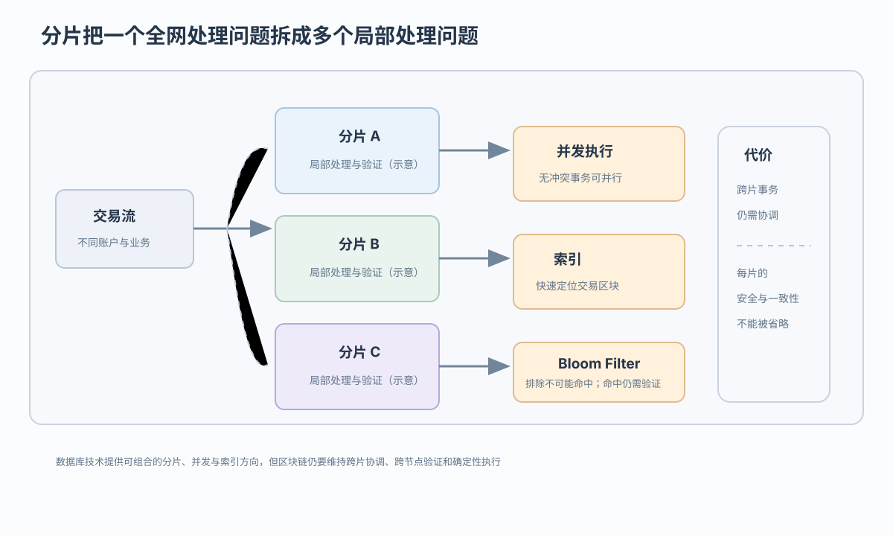
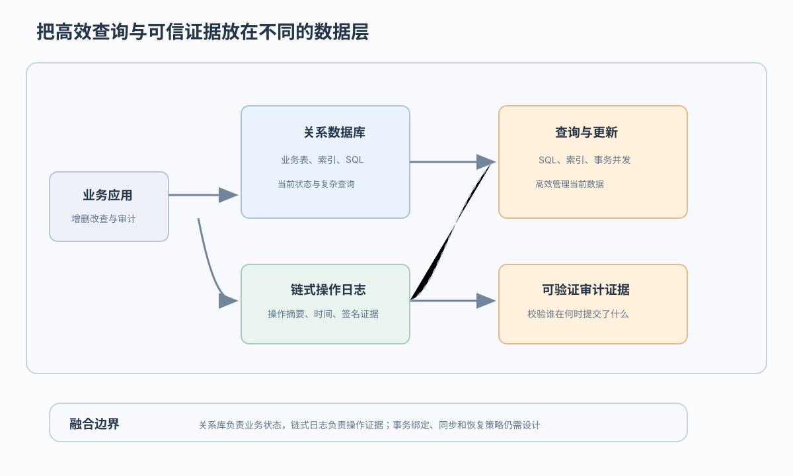

链式交易历史
区块保存已接受的追加式交易及其顺序；它不等于业务当前表，也不等于数据库 WAL

日常物流查询放关系库，多机构审计是否还需要链式记录
 VER. 2608
Built with impress.js
VER. 2608
Built with impress.js
按写入者、每秒请求、历史追查、查询类型，选择关系库、区块链或组合
先写哪些机构互信；若组合，说明业务表、链式日志各放什么、谁维护
两类系统的典型取向不是绝对二分；许可链和分布式数据库可能处于中间

| 要比较的问题 | 区块链 | 关系数据库 |
|---|---|---|
| 典型设计重点 | 强调改动可检测、可追溯和多主体验证 | 强调响应、吞吐、完整功能和事务并发 |
| 典型错误模型 | 需要处理恶意节点、分歧和开放网络协调 | 重点处理宕机、故障、非法访问和组织治理 |
| 典型运行环境 | 开放或多主体，也可采用许可网络 | 受控组织，也可处于分布式多方环境 |
两类系统都要防错、持续服务并达到性能要求；区别在于是否要让多个主体独立验证，以及提交时要协调哪些节点
三者都能承载结构化信息，但保存的事实、可执行操作和事务边界不同
区块保存已接受的追加式交易及其顺序；它不等于业务当前表，也不等于数据库 WAL
根据链上历史物化出的本地可查询状态，常见键值结构但不限定为一种实现
按关系模式组织当前或历史业务数据；SQL 支持增删改查和事务并发，表不必只保存当前数据
链式历史回答“接受了哪些操作”；状态库回答“节点当前可查询什么”；关系表回答“业务如何组织和操作数据”
别只写“去中心化”“分布式”：画出请求经过的节点、表、索引、状态库
区块链的全节点、轻节点、归档节点职责不同；分布式数据库也可分片、复制或保留控制平面
节点按协议验证和接受历史；关系数据库按事务与协调机制提交，具体架构依系统而异
区块链常由状态库提供当前查询；关系系统用表、索引和查询执行组织业务状态
比较时写明哪些节点保存全历史、谁参与提交、分析端查状态库还是关系表
技术要对应具体瓶颈；跨片协调、冲突回滚、索引维护和一致验证仍然存在

关系库保存业务状态，链式日志保存操作证据；二者以事务 ID 绑定

关系表 ＋ 链式操作日志 ＋ 数字签名 → 可验证审计；签名不自动证明现实事实，按时点回溯数据仍需完整事件、同步和恢复设计
组合前分别写业务状态、审计日志放在哪里，以及哪一方负责验证和恢复
| 做法 | 加到哪里 | 数据放在哪里、谁验证 | 可能改善什么、又多做什么 |
|---|---|---|---|
| 数据库技术进入区块链 | 数据库 → 区块链 | 分片、并发、索引辅助处理；跨片与一致验证仍需保留 | 可能改善扩展或查询；增加协调、维护和确定性执行成本 |
| 区块链特征进入数据库 | 区块链 → 数据库 | 关系库保存业务状态，链式日志保存摘要、时间和签名证据 | 可能增强审计；还要处理漏写日志、故障恢复和哪些人能看日志 |
| 代表性融合思路 | 分层组合 | BigchainDB、ChainSQL 类或共享数据库可作为案例，具体实现各异 | 收益取决于日志内容、提交绑定、查询路径和治理，不能由产品名称直接保证 |
融合不是把组件叠在一起；必须说明业务查询走哪条路、审计校验走哪条路、同步失败后怎样恢复
先给四个问题具体答案，再选关系数据库、区块链或两者组合
哪些机构能写；每秒多少次且最多等多久；是否要让多方核验历史；要不要复杂查询、更新和事务并发
单一可信主体、复杂查询、低延迟和可修改数据优先；仍需普通审计、备份和权限治理
多主体需要独立验证追加历史时可能合适；需承担共识、同步、隐私和运维成本
业务查询与跨组织审计并存时，可让关系库保存状态、链式日志保存记录；必须用事务 ID 绑定两次写入，说明漏写后怎样补、谁能查看和维护日志
写数据位置、提交绑定、同步失败恢复，以及不用另一方案的理由
列出供应商、物流商和门店，谁可能故障或作恶，每秒请求、最长等待、历史追溯、查询、更新和删除要求
说明链式历史、节点状态库、关系表、WAL 和审计日志分别保存什么，再用同一事务 ID 绑定业务提交与审计记录
指定哪家机构验证链上记录、谁维护关系表、同步失败怎样补写、故障后从何恢复、签收信息由谁担保
在关系数据库、区块链／分布式账本或两者组合中选择，指出另两种会在哪项速度、查询、审计或维护要求上失败